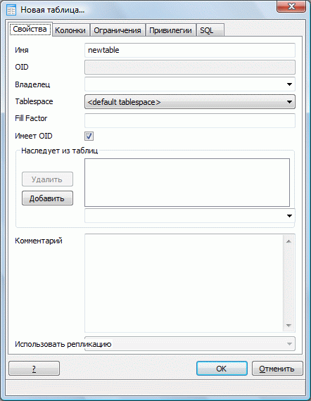
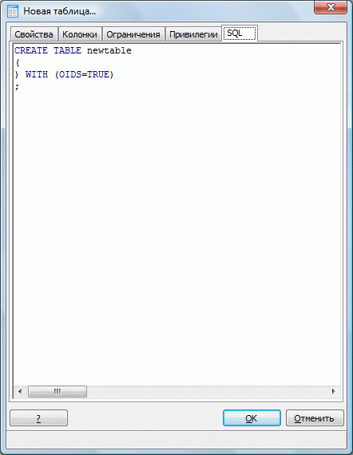
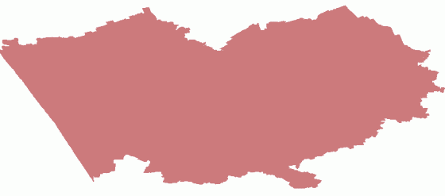
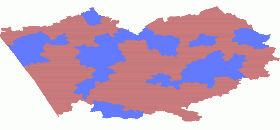
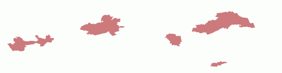
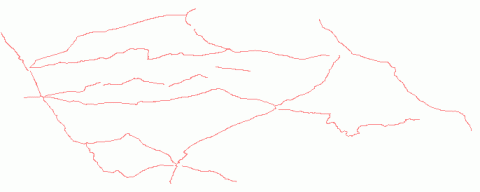
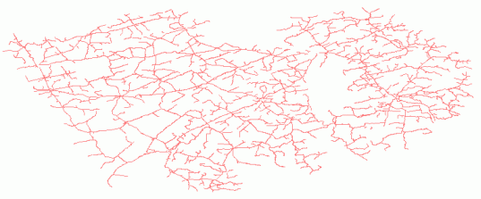
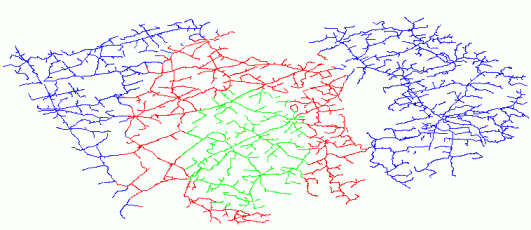

Визуализация данных PostGIS в MapServer
Рассмотрена работа MapServer с данными PostGIS
Среда визуализации пространственных данных в Веб - MapServer позволяет в качестве источника пространственных данных использовать в том числе и базы геоданных, созданные с использованием PostGIS, тем самым обеспечивая возможность их быстрой и удобной публикации в Сети. В данной статье рассматриваются основные моменты работы MapServer совместно с данными, хранящимися в PostGIS в ОС Windows. На официальном сайте MapServer о его совместном использовании с PostGIS сказано совсем немного, что и послужило одной из причин написания данной статьи. Начала работы с PostGIS изложены в статье "Основы работы с PostGIS", а о том, как установить PostGIS под Windows, вы можете узнать отсюда.
Здесь и далее в статье, под «данными PostGIS» понимается набор данных хранящийся в БД PostgreSQL с пространственным расширением PostGIS.
Оглавление
- Подготовка к работе
- Создание простейшего map-файла для работы с PostGIS
- Фильтры и выражения MapServer
- MapServer и SQL
- Продвинутое использование MapServer и SQL
Прежде чем переходить к вопросу создания map-файла, хотелось бы дать пару советов по работе с PostgreSQL.
1. Чтобы избежать ситуаций, связанных с неработающими запросами SQL, необходимо избегать использования двойных кавычек при создании таблиц, а также использовать в названиях полей только символы нижнего регистра. При использовании двойных кавычек, имя таблицы и колонки (идентификаторы) сохраняются в регистро-зависимом виде; это означает, что вы должны использовать двойные кавычки, когда указываете эти имена в запросе. Для тех, кто использует pgAdmin, нужно помнить, что во время создания таблицы этот интерфейс добавляет двойные кавычки автоматически!
2. При работе PostGIS совместно с MapServer, последний требует, чтобы в таблице присутствовал столбец OID, служащий уникальным идентификатором записей в PostgreSQL. Для этого запрос SQL, создающий новую таблицу, предназначенную для хранения геоданных, должен выглядеть следующим образом:
WITH (OIDS=TRUE);
В pgAdmin при создании новой таблицы можно просто указать опцию «Имеет OID» и соответствующий код SQL будет добавлен автоматически:


Также можно настроить PostgreSQL таким образом, чтобы вновь создаваемые таблицы посредством клиента psql автоматически включали столбец OID. Для этого в файле postgresql.conf, расположенном по умолчанию в C:\Program Files\PostgreSQL\8.3\data\ найдите строку default_with_oids = on, раскомментируйте ее и замените на default_with_oids = on. Для того, чтобы PostgreSQL смог обработать поступающий запрос, кодировка базы данных должна соответствовать кодировке запроса (например, обе должны быть WIN 1251). На этом подготовка завершена, теперь можно переходить непосредственно к работе с MapServer.
 Создание простейшего map-файла для работы с PostGIS
Создание простейшего map-файла для работы с PostGIS
Как известно, MapServer работает с так называемыми map-файлами, в которых описывается структура создаваемой карты. Структура map-файла, использующего данные PostGIS, имеет некоторые особенности. Рассмотрим пример простейшего map-файла, содержащего слой данных PostGIS:
MAP
IMAGETYPE GIF
EXTENT 77.8924 50.6194 87.2278 54.4701
SIZE 800 600
LAYER
NAME "boundary"
CONNECTIONTYPE postgis
CONNECTION "user=postgres password=1234 dbname=city host=localhost"
DATA "the_geom from boundary"
TYPE POLYGON
CLASS
COLOR 200 120 123
END
END
END

Пример отображения слоя PostGIS
Рассмотрим параметры соединения по пунктам:
CONNECTIONTYPE
Тип соединения, для слоев PostGIS всегда должен иметь значение postgis.
CONNECTION
Строка подключения, содержащая набор ключей, необходимых для подключения к базе данных, а именно: user –пользователь, от имени которого осуществляется подключение, password - пароль пользователя, dbname – имя базы данных, host – DNS-имя узла, на котором находится сервер PostgreSQL, port – номер порта, который «слушает» PostgreSQL, по умолчанию используется порт 5432.
DATA
Данные, которые необходимо отобразить на карте. Значение этого параметра указываются в виде «<имя столбца> from <имя таблицы>», где имя столбца – столбец в котором хранятся пространственные данные (по умолчанию the_geom), имя таблицы – таблица, содержащая данный столбец.
Для увеличения скорости обработки данных рекомендуется вручную указать SRID - уникальный идентификатор, однозначно определяющий систему координат (using srid=<значение>), а также первичный ключ таблицы (using unique <имя поля>) в противном случае MapServer будет пытаться самостоятельно обращаться к базе данных для получения этих данных, таким образом снижая производительность. Это обеспечивается путем небольшого редактирования параметра DATA:
Выражение using unique gid сообщает MapServer о том, что в качестве первичного ключа следует использовать поле gid (используемое в PostGIS по умолчанию), выражение using srid=4326 информирует MapServer о том, что SRID запрашиваемых данных имеет номер 4326. Значение SRID для каждой таблицы, содержащей геоданные, должно хранится в таблице geometry_columns. Если информация о SRID определенной таблицы отсутствует, это означает что геоданные не используют SRID, в таком случае используется значение SRID=-1.
При использовании нескольких слоев PostGIS, при получении данных из одной БД, целесообразно объединить их в единый пул подключений. Это позволит каждому слою не создавать новое подключение заново, а использовать уже имеющееся. Так, например, если ваша карта содержит 10 слоев PostGIS, то в случае подключения к каждому слою по отдельности, общие затраты времени на подключение к БД составят 150 миллисекунд (по 15 мс на каждое подключение), при использовании же единого пула это время сокращается в 10 раз (15 мс требуется на установку первого соединения). Чтобы установленное единожды подключение больше не разрывалось, необходимо в конце описания каждого слоя PostGIS добавлять строку:
Использование фильтров позволяет отображать на карте часть данных, соответствующую определенным условиям. Пример map-файла, использующего фильтр:
MAP
IMAGETYPE GIF
EXTENT 77.8924 50.6194 87.2278 54.4701
SIZE 800 600
LAYER
NAME "boundary"
CONNECTIONTYPE postgis
CONNECTION "user=postgres password=1234 dbname=city host=localhost"
DATA "the_geom from boundary using unique gid using srid=4326"
FILTER "area>2500 and perimeter>400"
TYPE POLYGON
CLASS
COLOR 200 120 123
END
END
END
В данном примере area и perimeter – поля таблицы boundary базы данных city. При работе с PostGIS выражение FILTER задается в соответствии с синтаксисом SQL, а не с синтаксисом MapServer, как это делается при работе с shape-файлами.

Пример использования фильтра, выбраны области с определенной площадью и периметром
При использовании выражений также существуют некоторые отличия, характерные для работы с PostGIS. При использовании shape-файлов атрибуты (названия полей) в выражениях MapServer набираются в ВЕРХНЕМ РЕГИСТРЕ, в то время как при использовании PostGIS – в нижнем.
MAP
IMAGETYPE GIF
EXTENT 77.8924 50.6194 87.2278 54.4701
SIZE 800 600
LAYER
NAME "boundary"
CONNECTIONTYPE postgis
CONNECTION "user=postgres password=1234 dbname=city host=localhost"
DATA "the_geom from boundary using unique gid using srid=4326"
TYPE POLYGON
CLASS
COLOR 200 120 123
EXPRESSION ([area]>2500)
END
CLASS
COLOR 100 120 255
EXPRESSION ([area]<2500)
END
END
END
В данном примере полигоны с площадью большей 2500 отображаются одним цветом (коричневым), а с меньшей – другим (синим):

Пример использования выражений
Более подробно ознакомиться с работой с фильтров и выражениями MapServer можно здесь.
Часто информация, которую вы хотите визуализировать, отсутствует в таблице геоданных непосредственно, но является результатом вычисления или сравнения с другими данными. В таких случаях вы можете построить запрос SQL, производящий эти операции, который будет выполнен MapServer.
MAP
IMAGETYPE GIF
EXTENT 77.8924 50.6194 87.2278 54.4701
SIZE 800 600
LAYER
NAME "boundary"
CONNECTIONTYPE postgis
CONNECTION "user=postgres password=1234 dbname=city host=localhost"
DATA "the_geom from
(
SELECT the_geom,naselenie,area,gid
FROM boundary,population
WHERE population.name=boundary.name and naselenie/area>0.009
)
AS newtable using unique gid using srid=4326"
TYPE POLYGON
CLASS
COLOR 200 120 123
END
END
END
В данном примере мы используем сразу 2 таблицы. Будем отображать только те полигоны для которых плотность населения превышает 0,009. Данные о населении хранятся в отдельной таблице population в поле naselenie, связанной с таблицей boundary через поле name. Отметим, что после ключевого слова SELECT необходимо указывать имена всех идентификаторов, используемых в запросе, а также присваивать псевдоним представлению (в данном случае newtable).

Карта, построенная на основе SQL-запроса
Рассмотрим еще один очень интересный пример использования запроса SQL, в котором MapServer считывает данные о дорогах из таблицы roads, но отображает на карте только 10 наиболее протяженных из них.
MAP
IMAGETYPE GIF
EXTENT 77.8924 50.6194 87.2278 54.4701
SIZE 800 600
LAYER
NAME "roads"
CONNECTIONTYPE postgis
CONNECTION "user=postgres password=1234 dbname=city host=localhost"
DATA "the_geom from
(
SELECT road_cod, Sum(Length(the_geom)) AS length, Collect(GeometryN(the_geom,1)) AS the_geom
FROM roads
GROUP BY road_cod
ORDER BY length DESC
LIMIT 10
)
AS newtable using unique road_cod using SRID=4326"
TYPE LINE
CLASS
COLOR 255 120 123
END
END
END
Суммарная длина дороги вычисляется функцией Sum(). Length() – это функция PostGIS, рассчитывающая длину линейного объекта.
Теперь остановимся подробнее на выражении Collect(GeometryN(the_geom,1)), позволяющем объединить несколько геометрических объектов в один. При загрузке данных из шейп-файлов любого типа, например полигонального (POLYGON), в PostGIS по умолчанию они будут иметь тип мультиполигон (MULTIPOLYGON) даже если состоят из одинарных полигонов. Аналогична ситуация и при загрузке линейных объектов, которые по умолчанию загружаются как мультилинии. Из-за этого результат выполнения функции Collect(the_geom), объединяющей дороги с одинаковым кодом в один геометрический объект (GROUP BY road_cod), будет иметь тип GEOMETRYCOLLECTION, вместо необходимого нам MULTILINESTRING, в качестве параметра функции Collect() мы укажем не the_geom, а GeometryN(the_geom,1) – функцию, возвращающую геометрию объекта (the_geom) под соответствующим номером (1) из набора MULTILINESTRING (нумерация геометрий в GEOMETRYCOLLECTION, MULTIPOINT, MULTILINESTRING и MULTIPOLYGON начинается с 1).
Выражение GROUP BY road_cod говорит о том, что полученные в результате запроса данные следует группировать по полю road_cod, ORDER BY length DESC – сортировать по полю length по убыванию (DESC).
Выражение LIMIT 10 ограничивает размер выборки.

Результат операции выборки – 10 длиннейших дорог Алтайского края
 Продвинутое использование MapServer и SQL
Продвинутое использование MapServer и SQL
Для выполнения разнообразных операций с данными в MapServer традиционно используют Mapscript, однако, при помощи переменных и SQL возможно сделать очень гибкую систему, используя только CGI программу mapserv и PostGIS.
Рассмотрим следующий пример:
MAP
IMAGETYPE GIF
EXTENT 77.8924 50.6194 87.2278 54.4701
SIZE 800 600
LAYER
NAME "roads"
CONNECTIONTYPE postgis
CONNECTION "user=postgres password=1234 dbname=city host=localhost"
DATA "the_geom from (%sql%) as newtable using unique gid using srid=4326"
TYPE LINE
CLASS
COLOR 255 120 123
END
END
END
Как уже было сказано выше, оператор DATA предназначен для выборки данных, которые нужно отобразить на карте. Из примера видно, что оператор DATA в данном случае довольно прост:
DATA "the_geom from (%sql%) as newtable using unique gid using srid=4326"
На этапе создания map-файла мы можем не знать, какие именно данные нам придется запрашивать в базе или возможно эти запросы будут формироваться автоматически. Переменная sql будет заменена на SQL запрос путем передачи последнего через URL. Например, в нашем случае введя в строку поиска браузера следующий URL:
http://localhost/cgi-bin/mapserv.exe?map=/ms4w/apps/mslocal/map/exampleGL.map&layer=roads&
sql=select+the_geom+,+oid+,+gid+from+roads&mode=map
мы получим полную карту дорог, хранящуюся в таблице roads:

Карта дорог Алтайского края, полученная в результате выполнения динамического SQL-запроса
Рассмотрим еще один довольно интересный пример, иллюстрирующий использование SQL в MapServer :
LAYER
<.. пропуск ..>
DATA "the_geom from (SELECT the_geom,gid, distance(the_geom,
geometryfromtext('POINT(' || (%mx% + %img.x% * %mw% / %iw%) || ' '
|| (%my% - %img.y% * %mh% / %ih%) || ')',4326)) AS dist FROM
roads) as newtable using srid=4326 using unique gid"
<.. пропуск ..>
TYPE LINE
CLASSITEM dist
CLASS
NAME "Roads < 1 deg from Click"
EXPRESSION ([dist] < 1)
COLOR 0 255 0
END
CLASS
NAME "Roads > 1 deg from Click"
EXPRESSION ([dist] >= 1 AND [dist] < 2)
COLOR 255 0 0
END
CLASS
NAME "Roads > 2 deg from Click"
EXPRESSION ([dist] >= 2)
COLOR 0 0 255
END
END
END
Суть данного примера состоит в следующем: при каждом клике мышью на карте переменные (mx, my, img.x, img.y и т.д.), описанные соответствующим образом (в соответствии с CGI переменными MapServer) в форме шаблона, передаются CGI программе mapserv и динамически подставляются в заготовленный map-файл. То есть, каждый раз, когда мы щелкаем по карте, наша карта будет изменяться. А именно, каждый раз производится расчет расстояния от места щелчка до всех геометрических объектов карты и в зависимости от его значения выбирается цвет объекта.
- mx, my – minx и miny в единицах измерения карты;
- mw, mh – ширина и высота карты в единицах измерения карты;
- iw, ih – ширина и высота картинки в пикселях;
- img.x, img.y – координаты клика мыши.

Карта дорог Алтайского края с классификацией по признаку удаленности от выбранного места
Ссылки по теме
Дата создания: 20.11.2008
Автор(ы): Денис Рыков